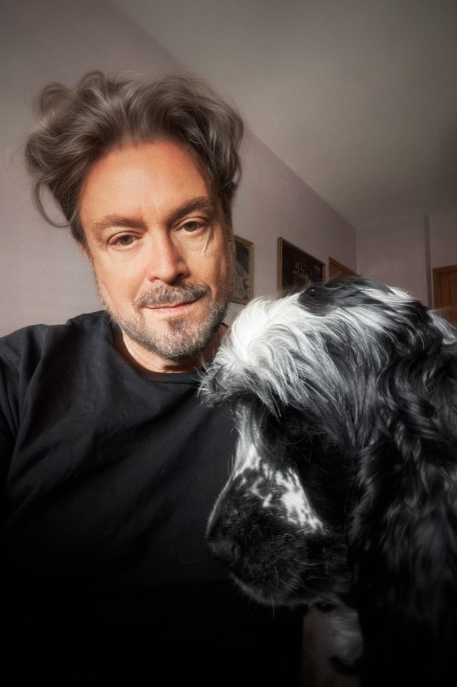

Peter Mangiaracina began writing in New York while he was still in high school, although “writing” at the time meant producing surreal plays, acting in them, and occasionally directing them. This seemed perfectly reasonable.
Those early plays were influenced by Harold Pinter, Sam Shepard, and the lyrics of Bob Dylan, and established several habits that have proved difficult to get rid of: an attraction to uncomfortable situations, people who don’t quite understand one another, dialogue that occasionally behaves badly, and the suspicion that ordinary reality could use some adjustment.
Fiction and psychology
Peter is a writer of offbeat, psychological, and surreal fiction. His work explores the tension between reality and perception, often placing characters with fractured inner lives into situations that test their humanity, agency, and sense of self. Mental illness, altered perception, obsession, identity, death, and the elaborate stories people tell themselves in order to keep functioning turn up frequently. So do jokes. Sometimes at inappropriate moments.
His academic background in psychology and English literature fed an already unhealthy interest in why people behave as they do, particularly when what they do makes perfect sense to them and absolutely no sense to anyone else. Psychology remains central to much of his fiction, but he is less interested in diagnostic labels than in what happens when a person’s private version of reality collides with everybody else’s.
Over time, his love of mystery fiction led him to novel writing, drawing influence from the sharp, character-driven dialogue of Jonathan Kellerman and Lawrence Block. He considers dialogue one of his strongest skills. While his novels follow the structure of classic mystery thrillers, his short fiction tends toward psychological horror, frequently employing surreal, hallucinatory imagery, existential dread, and dark comedy. He also admires Stephen King’s ability to uncover horror in the ordinary.
The division between the two forms suits him. In the novels, somebody usually has to figure out what happened and why. In the short stories, figuring out what happened may be part of the problem.
Influences
Peter’s work is deeply influenced by the Surrealists and Dada artists, particularly Salvador Dalí, René Magritte, and Marcel Duchamp, whose distortions of reality and challenges to perception mirror his own narrative approach, blurring the line between the rational and the absurd. Perfectly ordinary reality has never seemed quite sufficient.
Music has been another persistent influence, particularly Frank Zappa and Robert Fripp and King Crimson. Zappa’s irreverence, collisions between high and low culture, and refusal to behave properly have always appealed to him, as has Fripp’s precision and willingness to make work that does not necessarily care whether the audience finds it easy.

The Canary Islands and the novels
An American living in Spain, Peter teaches English to adult professionals, particularly doctors. He helps them refine conversational skills, presentations, and academic writing. After decades of teaching, he remains fascinated by the difference between knowing a language and actually having something to say in it. He strongly favors the latter.
He was born in New York and eventually made his way to Las Palmas de Gran Canaria, in Spain’s Canary Islands, where he now lives and writes. The islands also became the setting for his first Trep Racine novel, The Canary Killer.
In The Canary Killer, New York psychotherapist Trep Racine relocates to Las Palmas after the death of his wife and becomes involved in the investigation of a series of murders. The novel combines Peter’s interests in psychology, identity, outsiders, moral ambiguity, and the peculiar experience of trying to understand a place while never being entirely certain that the place wants to understand you. The Canary Killer has been accepted by Next Chapter Publishing and is scheduled for publication in 2027.
He is currently working on a second Trep Racine novel, A Hanging in Suite 221, which returns Trep to New York and begins with the discovery of a woman hanging from the ceiling of his newly renovated psychotherapy office. This is generally considered a poor way to begin the working day.
Peter’s short fiction occupies somewhat less orderly territory. His stories have appeared in publications and anthologies including The Morgue Magazine, Stygian Lepus, The Brussels Review, Bewildering Stories, Flash Phantoms, and Sulfur Surreal Jungle. His stories include “Tunnel of Love,” “Tiny Acts of Vengeance,” “Burn Patterns,” and “Irresistible,” the last of which was selected for The Rabbit Hole Anthology IX.
A few unusual things
A few unusual things about Peter: Lust for Life by Irving Stone sparked his desire to become an artist, while the existential thinkers Søren Kierkegaard, Jean-Paul Sartre, and Friedrich Nietzsche, along with The Origin of Consciousness in the Breakdown of the Bicameral Mind by Julian Jaynes and The Denial of Death by Ernest Becker, shaped his fascination with consciousness, responsibility, and the fragile narratives people use to survive.
Becker in particular left a mark. The idea that human beings spend much of their lives constructing elaborate defenses against the knowledge that they are going to die is both philosophically disturbing and, from a writer’s point of view, extremely useful.
After all of those influences, Peter somehow ended up writing stories about murderers, psychiatrists, damaged people, unreliable realities, existential terror, unfortunate misunderstandings, and the occasional man with a duck on his head. In retrospect, the warning signs were probably there from the beginning.